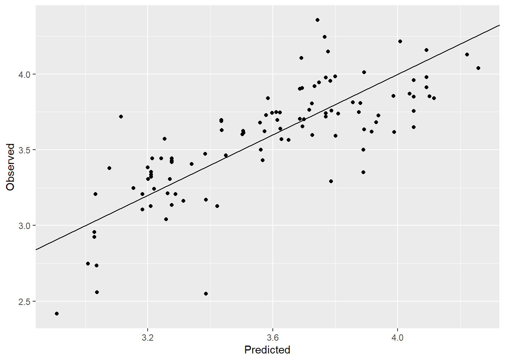
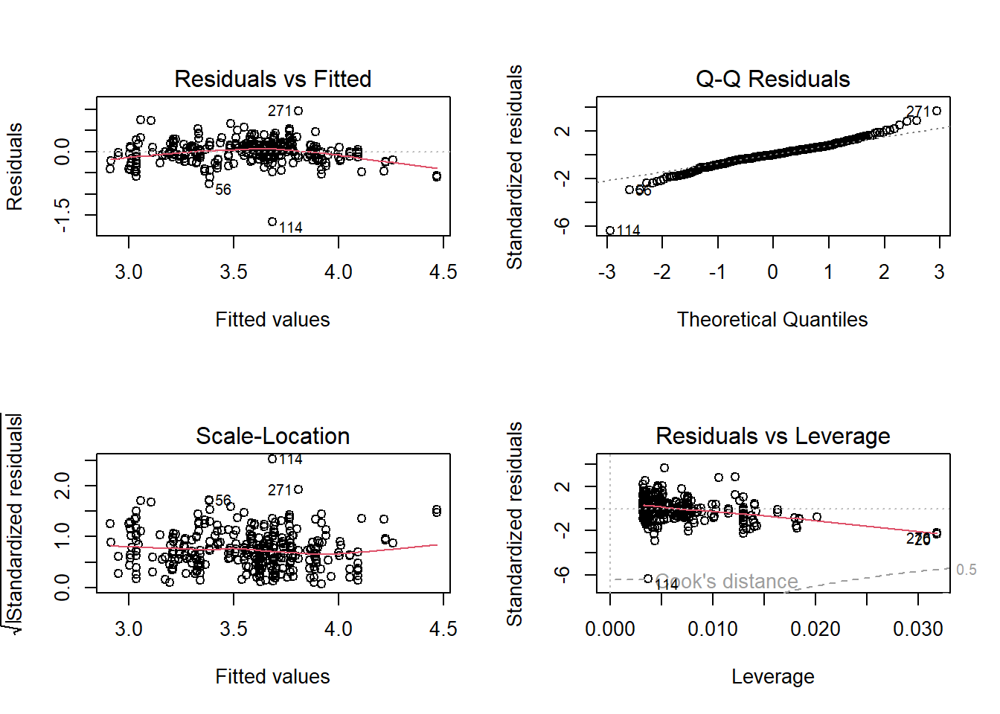

# Load the packages
library(reshape2)
library(ggplot2)
library(ggh4x)
library(ggcorrplot)
library(car) # to calculate the VIF values
library(GGally) # for pairs plot using ggplot frameworkGood houses are always in demand. However in the recent times, the price of house has increased exponentially. It will be interesting to identify the factors affecting the price of house. I found this dataset on UCI machine learning repository which gives the house price per unit area and related variables.
The idea is to build a predictive model to predict house price per unit area based on the variables like the age of house, etc. We will look at the exploratory data analysis first and later build prediction models. First let us access and process the data through R.
# Get starbucks data from github repo
path = "https://raw.githubusercontent.com/adityaranade/portfolio/refs/heads/main/real_estate/real_estate_valuation.csv"
data0 <- read.csv(path, header = TRUE)
# Data processing
# clean the column names
colnames(data0) <- c("ID", "date", "house_age", "distance", "number_store", "latitude", "longitude", "price")
# Check the first 6 rows of the dataset
data0 |> head() ID date house_age distance number_store latitude longitude price
1 1 2012.917 32.0 84.87882 10 24.98298 121.5402 37.9
2 2 2012.917 19.5 306.59470 9 24.98034 121.5395 42.2
3 3 2013.583 13.3 561.98450 5 24.98746 121.5439 47.3
4 4 2013.500 13.3 561.98450 5 24.98746 121.5439 54.8
5 5 2012.833 5.0 390.56840 5 24.97937 121.5425 43.1
6 6 2012.667 7.1 2175.03000 3 24.96305 121.5125 32.1We will focus on the 3 variables as follows
house_age : age of house in years.
distance : distance to nearest MRT station in meters.
number_store : the number of convenience stores in the living circle on foot.
price : Price per unit area where 1 unit is 1 ping = 3.3 sq. meter
Let us look at the distribution of these 3 variables
# Check the rows which do not have any entries
ind.na <- sum(is.na(data0))
ind.na # No NA values[1] 0# Filter the data
# column house_age, distance and price
# data <- data0 |> select(c(house_age,distance,price))
data <- data0[,c("house_age","distance","number_store","price")]
data |> head() house_age distance number_store price
1 32.0 84.87882 10 37.9
2 19.5 306.59470 9 42.2
3 13.3 561.98450 5 47.3
4 13.3 561.98450 5 54.8
5 5.0 390.56840 5 43.1
6 7.1 2175.03000 3 32.1# Data for histogram
melted_data <- melt(data)
# Plot the histogram of all the variables
ggplot(melted_data,aes(value))+
geom_histogram(bins = 20)+
# geom_histogram(aes(y = after_stat(density)),bins = 20)+
facet_grid2(~variable, scales="free")+theme_bw()Histogram does not give much information. Let us look at the correlation plot to get an idea of how the variables are correlated with each other.
# correlation plot of all the variables
corr <- round(cor(data), 2)
ggcorrplot(corr)house_age is not related to distance and number_store which is not surprising. distance variable is positively correlated with number of stores which again not surprising. However price is negatively correlated with distance to nearest MRT station as well as house age and positively correlated with number of stores in the vicinity which is again logical. Next we look at the pairs plot which will show the bivariate scatter plots as well as the correlation between each variables. Scatter plots in the last row is of interest as it shows the pairwise scatterplots where price is on the y axis and the other variables are on the x axis.
ggpairs(data)The scatterplot of price vs. distance does not look linear but more of curved. We will focus on predicting price based on the distance variable. We will look at a simple linear regression where we will try to predict price as a function of distance.
# split the data into training and testing data
seed <- 23
set.seed(seed)
ind <- sample(floor(0.75*nrow(data)),
replace = FALSE)
# Training dataset
data_train <- data[ind,]
# Testing dataset
data_test <- data[-ind,]
# Simple linear regression using raw data
model <- lm(price ~ distance, data = data_train)
summary(model)
Call:
lm(formula = price ~ distance, data = data_train)
Residuals:
Min 1Q Median 3Q Max
-35.403 -6.257 -0.951 5.565 73.478
Coefficients:
Estimate Std. Error t value Pr(>|t|)
(Intercept) 45.8517132 0.7759478 59.09 <2e-16 ***
distance -0.0072439 0.0004646 -15.59 <2e-16 ***
---
Signif. codes: 0 '***' 0.001 '**' 0.01 '*' 0.05 '.' 0.1 ' ' 1
Residual standard error: 10.38 on 308 degrees of freedom
Multiple R-squared: 0.4411, Adjusted R-squared: 0.4393
F-statistic: 243.1 on 1 and 308 DF, p-value: < 2.2e-16# Prediction on the testing dataset
y_pred <- predict(model, data_test)
# Calculate residuals = observed - predicted
residuals <- (data_test$price - y_pred)
# Residual vs. predicted plot
ggplot(NULL,aes(y_pred,residuals))+geom_point()+
labs(y = "Residuals", x="Predicted price")+
geom_hline(yintercept = 0, colour = "red")
The residual plot shows a trumpet horn pattern which indicates the constant variance assumption of the model is not satisfied. Hence out model is not reliable. This is not surprising since the scatterplot indicates a curved fit rather than a linear fit.
# Create a observed vs. predicted plot
ggplot(NULL,aes(y_pred,data_test$price))+geom_point()+
labs(y = "Observed", x="Predicted")+
lims(x=c(0,80),y=c(0,80))+
geom_abline()
# Calculate RMSE
rmse <- (residuals)^2 |> sum() |> sqrt()
round(rmse,2)[1] 92.69# Check the assumptions of the regression model
par(mfrow = c(2, 2))
plot(model)
The model is has RMSE = 92.69 and the observed vs. predicted plot has the trumpet horm pattern so it is not good model. We will now look at a Gaussian process model which can handle non linear relationships very well.